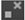
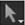

如果您已经绘制了笔画/形状，但希望对其进行更改，您可以使用 RotoPaint 选择工具来选择它或它的某些部分。也可以使用快捷方式在 RotoPaint 工具栏中的所有选项之间切换 Q .
当您单击笔画/形状中的点时，该点会更改颜色以指示它是否处于焦点状态 (默认情况下为绿色) 以及它是否有一个表达式集 (默认为红色)。您可以更改上的默认颜色 观众 首选项中的选项卡。
还可以使用 RotoPaint 工具设置中的控件来显示和隐藏信息，如点、点编号、云形线和变换控制柄。请参阅 调整选定形状/笔划的显示属性 下面。
每当选择工具处于活动状态时，RotoPaint 工具设置允许您控制在查看器中显示的可见形状/笔画和点的信息:
• 要查看或隐藏可见形状/笔触点的数字，请切换 标签点 按钮 。羽毛点用与它们的形状点相对应的带括号的数字标记，因此，例如，如果一个形状点用数字 2 标记，它的羽毛点用 [2] 标记。
•
要查看或隐藏可见形状中的样条线，请切换
隐藏花键
按钮
 .
.
•
要查看或隐藏可见绘制笔划中的样条线，请启用
显示绘制笔划样条线
并切换
隐藏花键
按钮
 .
.
• 要查看或隐藏可见形状/笔画中的点 (和切线控制柄)，请切换 隐藏点 按钮  .
• 要查看或隐藏可见形状/笔画的变换手柄插孔或变换框，请切换 隐藏变换句柄 按钮 (或按 T 在观众)。
• 要在移动选择时隐藏变换手柄插孔或变换框，请单击 “在移动时隐藏变换手柄” 按钮 。这可能会更容易正确定位您的选择。
| 1。 | 单击 选择全部 工具  ,或按键盘快捷键 Q . |
| 2. | 通过在查看器中单击或在 “描边/形状” 列表中单击其名称来选择要编辑的描边/形状。要选择几个笔画/形状, Ctrl / Cmd + 点击或 转变 + 单击 (以选择一个范围) 它们在笔触/形状列表中的名称。可以同时选择样条线和点。 |
在查看器中选择笔画/形状时，可以通过右击并选择来反转选择 反转选择 。您以前没有选择的所有笔划/形状现在都被选中。
如果要移动选定的描边/形状，请围绕整个形状拖动选择框，直到围绕该形状形成一个框。拉动形状中心的十字架可以让你在观众周围移动它。如果启用了自动键，则移动描边/形状时会自动添加关键帧。有关自动密钥和创建关键帧的信息，请参见 动画笔画/形状 .
提示:
要在绘制笔画中选择点并在查看器中查看您的选择，您必须启用
显示绘制笔划样条线
 在工具设置中。
在工具设置中。
提示: 默认情况下，如果在查看器或笔画/形状列表中选择了笔画/形状，则单击查看器中的空白区域不会取消选择它。如果你想改变这种行为，你可以禁用 常数选择 模式 在 RotoPaint 工具设置中。
| 1。 | 右键单击 选择全部 工具并选择 选择样条 工具 . |
| 2. |
确保
隐藏花键
|
| 3. | 通过在查看器中单击或在 “描边/形状” 列表中单击其名称来选择要编辑的样条线。也可以在形状周围单击并拖动选择框 选择样条 活跃。选择样条线只选择样条线，而不是其中的点。 |
提示: 使用 选择样条 工具，您也可以复制您选择的笔画/形状。只需右键单击其中一个点，然后选择 复制 。将使用与选定的样条线和属性相同的样条线和属性创建新的描边/形状。
| 1。 | 右键单击 选择全部 工具并选择 选择点 工具 . |
| 2. | 确保 隐藏点 在 RotoPaint 工具设置中禁用。 |
| 3. | 通过在 “描边/形状” 列表中单击要编辑的描边/形状的名称，然后在查看器中选择一个点来选择该描边/形状。要选择几个点, Ctrl / Cmd + 在查看器中单击它们，或使用选择框创建变换框。 |
使用 选择点 工具将选择限制为一个描边/形状。
| 1。 |
右键单击
选择全部
工具并选择
选择羽毛点
工具
|
| 2. |
确保
隐藏点
|
| 3. | 通过在 “描边/形状” 列表中单击要编辑的描边/形状的名称，然后在查看器中选择一个羽毛点，来选择要编辑的描边/形状。要选择几个羽毛点, Ctrl / Cmd + 在查看器中单击它们，或使用选择框创建变换框。 |
使用 选择羽毛点 工具将选择限制为一个描边/形状。
| 1。 |
右键单击
选择全部
工具并选择
选择点
工具
|
| 2. | 确保 隐藏变换句柄 在 RotoPaint 工具设置中禁用。 |
| 3. | 在笔划/形状中选择点 转变 + 单击或通过单击并拖动要选择的点。将出现一个变换框。 |
| 4. | 您也可以使用快捷方式 T 切换查看变换手柄。 |
|
|